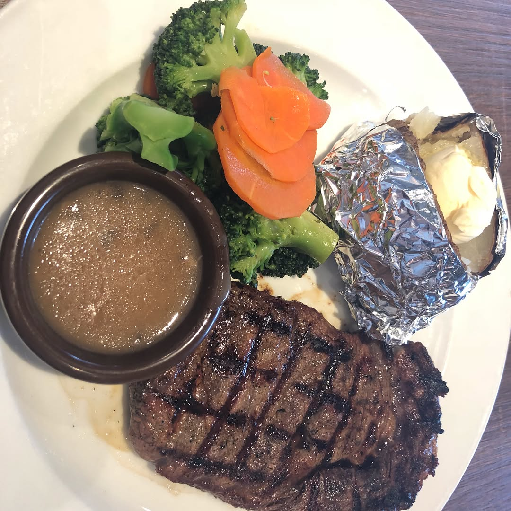
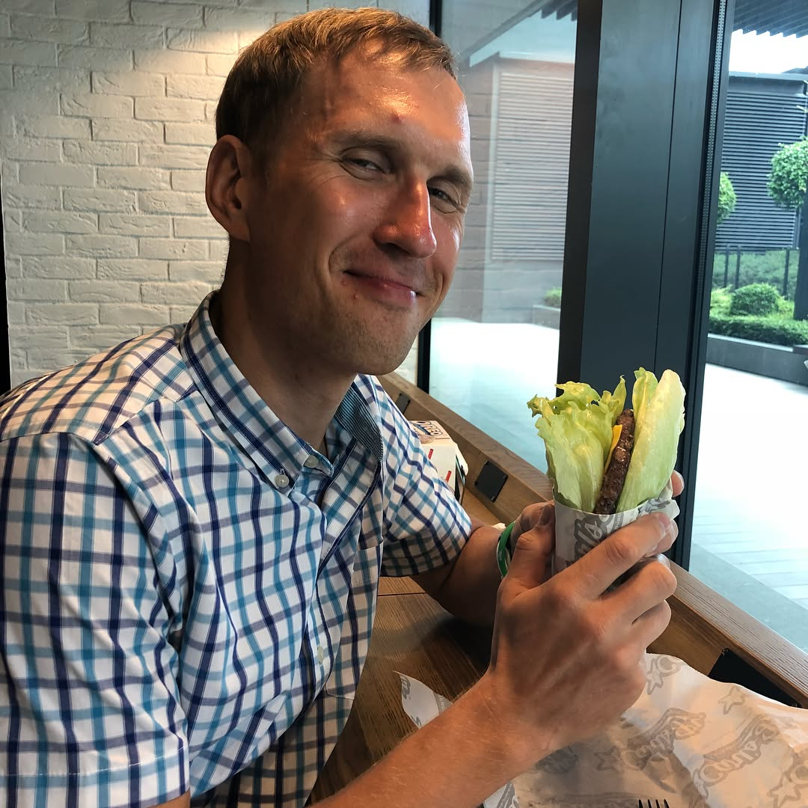

Saturday brick training - 135 km ride, followed by 7 km of spontaneous hill repetition run under +32C burning sun ☀️ 🏃🏽♂️😰 (because I forgot keys and was left outside the house for a bit 😬) followed by much needed steak and low-carb Karl’s Junior burger 🍔 to recover after 2 days of cycling 🚴🏻 — #iromantri #triathlon #cyclinglife #healthyfood #sportnutrition #swimbikerun #dietfood #orbea #cervelo #specializedbikes #giantbikes #canyonbikes #bmcbikes #boardmanbikes #ironmantraining #recoverymeal
2018-02-17 23:03:52
Back to main page